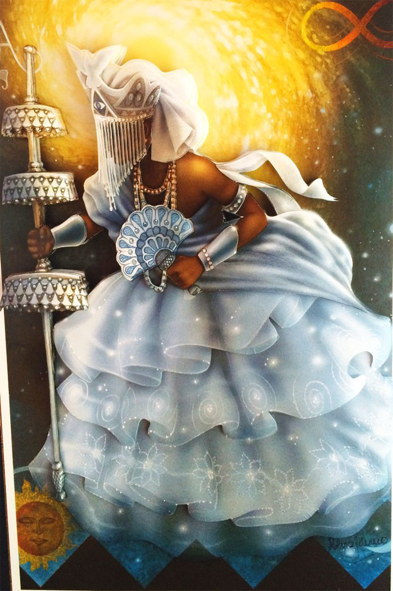
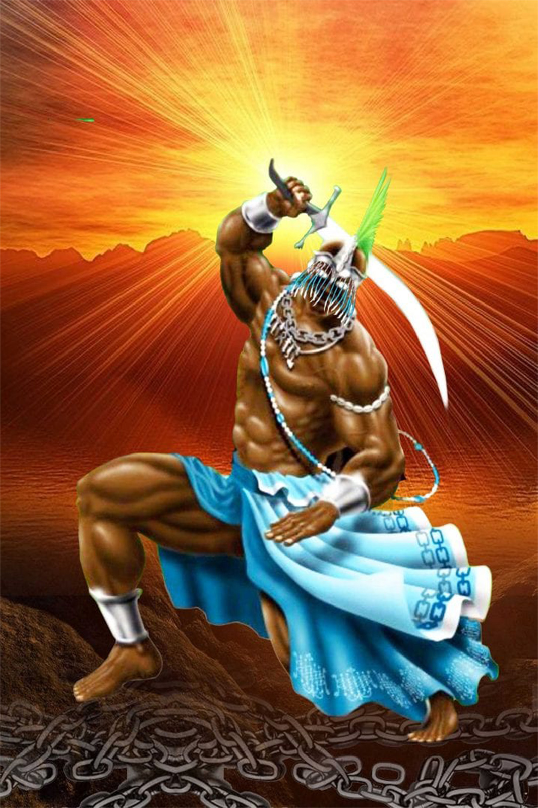
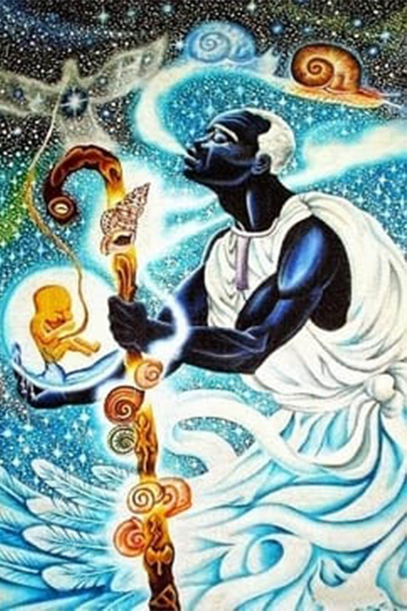
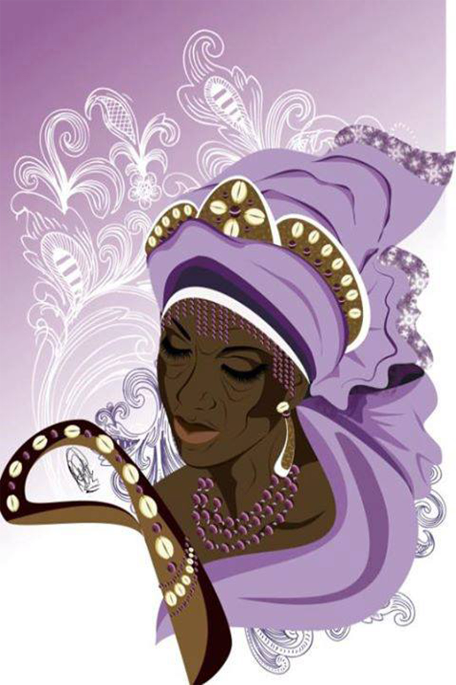
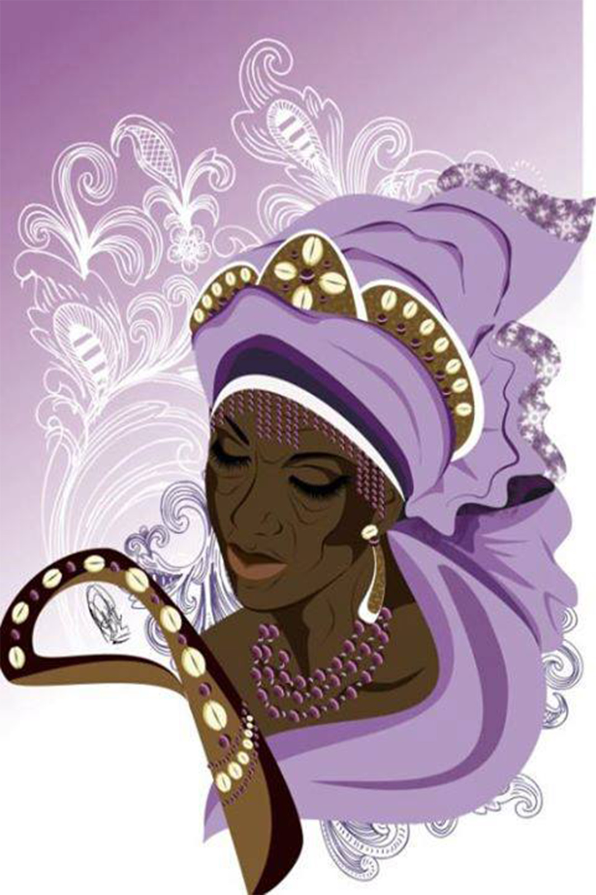
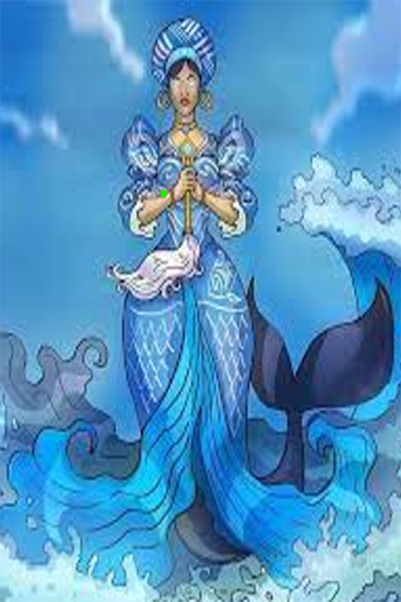
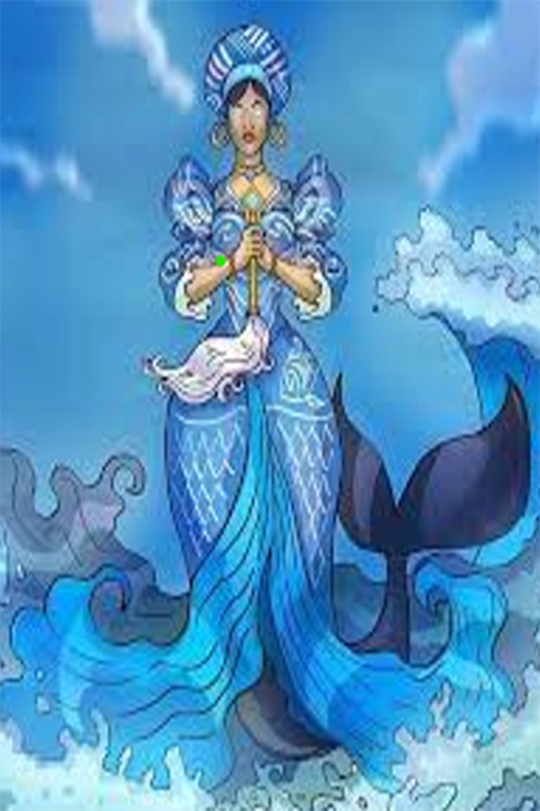

História

Oxalá
O criador da humanidade segundo as origens africanas, conhecido como grande orixá. É também chamado de Obatalá, que representa a pureza, e rei de pano branco.

Ogum
É o deus da metalúrgica, ele recebeu do pai Olodumare a responsabilidade de cuidar do ferro e de todas as coisas originadas do ferro. Ele é o deus da guerra, geralmente representado por uma espada na mão.

Olorum
deus supremo, o dono do céu, ele criou todos os deuses ou orixás e dividiu o universo sobrenatural e o mundo dos homens.
 Iemanjá
Conhecida como rainha do mar e mãe protetora dos pescadores, a tradução do seu nome é nagô mãe dos peixes. De início Iemanjá era apenas afluente do rio, na Nigéria. Com o tempo ela passou a se tornar orixá do rio e cultuada pelos iorubás.
Iemanjá
Conhecida como rainha do mar e mãe protetora dos pescadores, a tradução do seu nome é nagô mãe dos peixes. De início Iemanjá era apenas afluente do rio, na Nigéria. Com o tempo ela passou a se tornar orixá do rio e cultuada pelos iorubás.
 Xangô
Foi uma pessoa real, ele foi o quarto rei do império Oió, na África Ocidental. Após sua morte ele tornou-se uma divindade, tornando-se o deus do Trovão. Ele tinha poder sobre as chuvas e era conhecido como orixá da justiça.

Nanã
Ela ajudou já criação da terra e dos humanos, conhecida também por Nanã Burucu. Deusa do fundo dos lagos, considerada como mãe da águas doces, foi responsável por criá-las.
Xangô
Foi uma pessoa real, ele foi o quarto rei do império Oió, na África Ocidental. Após sua morte ele tornou-se uma divindade, tornando-se o deus do Trovão. Ele tinha poder sobre as chuvas e era conhecido como orixá da justiça.

Nanã
Ela ajudou já criação da terra e dos humanos, conhecida também por Nanã Burucu. Deusa do fundo dos lagos, considerada como mãe da águas doces, foi responsável por criá-las.
 Oxum
Conhecida como a deusa do amor e da beleza e uma das esposas de Xangô. Ela é também a orixá dos rios e fontes e das águas doces.
Oxum
Conhecida como a deusa do amor e da beleza e uma das esposas de Xangô. Ela é também a orixá dos rios e fontes e das águas doces.
 Iansã
Conhecida também como Oiá, orixá dos raios, ventos e tempestades. Ela também transporta os mortos até o mundo sobrenatural Orum. Até por isso ela é a orixá da cerimônia fúnebre onde fazem oferendas a quem morreu.

Olocum
A verdadeira divindade dos mares e oceanos, no Brasil sua fila Iemanjá que está nesse posto de deusa do mar.
Iansã
Conhecida também como Oiá, orixá dos raios, ventos e tempestades. Ela também transporta os mortos até o mundo sobrenatural Orum. Até por isso ela é a orixá da cerimônia fúnebre onde fazem oferendas a quem morreu.

Olocum
A verdadeira divindade dos mares e oceanos, no Brasil sua fila Iemanjá que está nesse posto de deusa do mar.